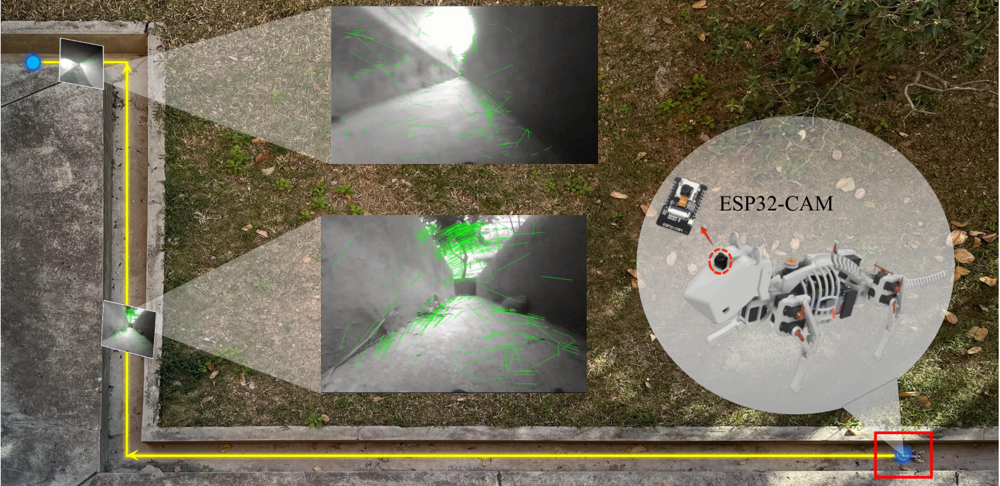

Problem Setting
Project Video
System Demo
Micro-scale quadruped robots used in pipelines and confined infrastructure often carry only a monocular camera. Fast gait dynamics and vibration degrade observations, while repetitive and texture-poor environments break conventional feature-based tracking.
